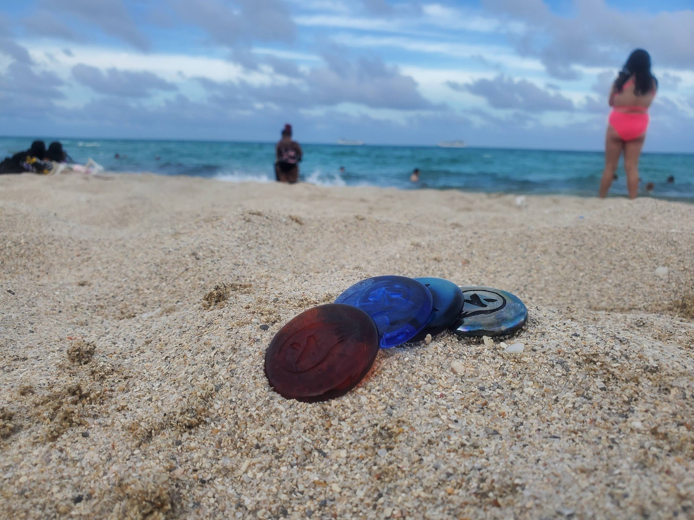

THE LIFESTYLE
Real coins. Real places. Real life.



Play games. Earn tokens. Spend them across a real universe — the Outlet Mall, Biorama, and the games themselves.
#EnergyIsCurrency
Kudoken is a blockchain ecosystem that rewards community participation. Interact with first-party and partner programs, earn tokens, then decide how to use them — spend them, stake them, redeem them for rewards, or trade them. As the network of partners grows, the ways to earn and spend keep growing with it.
Race in Monkey Jockey. Fly Hawaiʻi Island. Games feed kudokens straight into your wallet — winning pays.
Businesses get a free starter chunk to onboard. Participants earn through programs, events, and community rewards.
One wallet, everywhere: the Outlet Mall, Biorama bowls, games, partner businesses. Real spending, not speculation.
Kudoken has a face, a mask, and an attitude. This is crypto with a culture — built by players, holders, and believers.

The spirit of the token — silent, sharp, always moving. The Shinobi doesn't chase the market. The market comes to the Shinobi.

They say you can't buy good luck. But you can buy Kudoken on Uniswap — and luck will find you.
Three ways in — pick yours.
Monkey Jockey's seeded racing and Fly Hawaiʻi Island pay kudokens to your wallet. Play well, get paid.
See the games →Grab kudokens on Uniswap and hold them in any ERC-20 wallet. Then spend them across the universe.
Open Uniswap →Local businesses get a free starter chunk of kudokens to begin accepting them. The network grows, your customers grow with it.
How onboarding works →Kudoken is the connective tissue across the whole universe. Earn it in one place, spend it in another.
The hub — shop, discover, and spend kudokens with participating merchants across the mall.
The decentralized social layer. Tip creators, unlock rooms, and move value between bowls.
Monkey Jockey, Fly Hawaiʻi Island, and what's next — entry fees, winnings, and rewards all in kudoken.
Kudoken's mechanics fund what matters: animal sanctuaries and environmental causes. Stake kudokens and a monthly allocation flows to participating sanctuaries — they use it toward their mission, the staker's position stays protected. The ecosystem grows, the animals eat.
Stake for set periods and tokens flow monthly to the sanctuary you back — direct support, on-chain, no middlemen.
Community-driven efforts for sustainability and conservation, funded by the same mechanics that reward players.
A utility token on Ethereum (ERC-20) that powers a rewards ecosystem: earn it by participating — games, programs, partner businesses — and spend it across the Outlet Mall, Biorama, and games. It's built for using, not just holding.
Three ways: earn them playing games like Monkey Jockey and Fly Hawaiʻi Island, buy them on Uniswap, or — if you're a business — get a free starter chunk when you onboard to accept them.
Across the universe: the Outlet Mall, Biorama bowls, in-game purchases and rewards, and participating partner businesses. The partner list keeps growing.
Kudoken is a utility token — it's designed to be earned and spent inside an ecosystem. Nothing here is financial advice, and no returns are promised. Play, earn, spend.
Onboarding businesses receive a free starter chunk of kudokens to get going. Reach out and we'll walk you through accepting them — your customers earn, you get discovered.